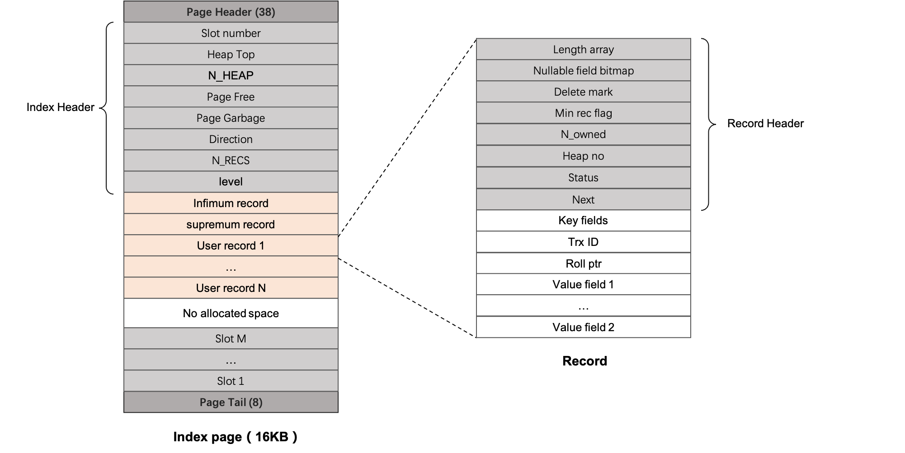

innodb
MySQL 核心存储引擎，核心结构为 BTREE
❯ tree -d
.
|-- api InnoDB Native API
|-- arch Common interface for redo log and dirty page archiver system
|-- btr btree
|-- buf The database buffer buf_pool
|-- clone Innodb Clone Interface
|-- data SQL data field and tuple
|-- ddl
|-- dict Data dictionary system
|-- eval SQL evaluator: evaluates simple data structures, like expressions, in a query graph
|-- fil The low-level file system
|-- fsp File space management
|-- fts Full text search
|-- fut File-based list utilities
|-- gis InnoDB R-tree search interfaces
|-- ha Hash storage.
|-- handler
|-- ibuf Insert buffer
|-- include
| `-- detail
| |-- fil
| |-- fts
| `-- ut
|-- lob Large object (LOB) storage
|-- lock
|-- log redo log / undo log / ddl log
|-- mach Utilities for converting data from the database file to the machine format.
|-- mem The memory management
|-- mtr Mini-transaction
|-- os
|-- page
|-- pars
|-- que Query graph
|-- read Cursor read
|-- rem Record manager
|-- row
|-- srv
|-- sync
|-- trx
|-- usr
`-- ut
多写几个单词会死...
- 核心是一个 btree，加上并发控制，事务，日志等机制
QS:
- 怎么查询表中得隐藏列
- 基于 redo undo log 怎么恢复数据
- 代码结构杂乱无章，怎么拆分模块
- 怎么获得具体的性能指标
btree
http://mysql.taobao.org/monthly/2025/03/03/
-
表也是 btree，称为聚簇索引
- 有主键得情况下，key是主键
- 没有主键得情况下，key 是什么？
-
page 大小默认 16k，无法配置，压缩之后最小为 1024 字节

- index 指向表的 value 是什么，类似 pg 的ctid 还是具体的值还是其他
并发控制
-
基于 undo 的 lock + mvcc
- 读写不阻塞
- 写写的时候使用 lock 保证事务
- 悲观锁
-
lock
-
mvcc
- 快照
-
mtr
log
https://www.cnblogs.com/mengxinJ/p/14211427.html
-
redo log
- 记录数据页面的变动，故障之后可以重放
- pg 记录的是事务的数据的变动，故障恢复之后重放，和 redo 的区别在哪里
-
undo log
- 为支持 mvcc
-
binlog
- 记录所有语句的变动，用于数据同步，故障恢复等
故障恢复
初始化
- innodb_init
填充 handlerton 结构体，handlerton 是存储引擎的核心接口，定义了存储引擎的基本操作，比如初始化、创建表、插入数据等。
当前 innodb 几乎都实现了 handlerton 的所有接口
- 可能有的接口还是由于 innodb 而添加的，许多接口是 innodb 专用的
- handlerton 是存储引擎的全局操作 ，和具体的表无关
- 与表相关的操作是通过继承 handler 实现的，常用的操作例如读index，读表等
相关接口
并行支持
官方实际只支持 count，并没有其余的外部使用案例，我们当前还在 rapid load 的时候使用 具可以参考 row_mysql_parallel_select_count_star 和 LoadTableFromPrimaryTable
并行是 innodb 内部并行，通过注册函数可以把一部分工作下推到 innodb 中
当前提供主要为下面三个接口，
-
parallel_scan_init
- 创建一个 scan ctx，所有线程公用，保存一些公共状态或者数据
-
parallel_scan
- 实际执行，这里会接受几个回调函数，用于实际的执行需求
-
parallel_scan_end
- 最后的清理工作
实际主要操作的是 Parallel_reader，可以参考 row_mysql_parallel_select_count_star ，这里是一个比较完整的可用的是例子
-
add_scan
- 注册 index，index 就是 btree，可以是实际的表，也可以是 索引
- 切分 index，划分reader的任务，每个reader负责一个子树
- 注册执行函数，也就是并行是需要具体执行的操作
-
run
- 启动线程，执行任务
- 底层会调用 traverse_recs 执行注册的函数，这里可以获得实际需要处理的数据 m_rec
上面的 innodb 提供的接口只是一个适配器，从 18年就添加的，但是到现在都没有实际的使用例子
sysbench
- sysbench 测试
100W.
sysbench --threads=16 --time=60 --report-interval=1 /usr/share/sysbench/oltp_common.lua --mysql-host=localhost \
--mysql-port=3306 --mysql-user=root --mysql-socket=/tmp/mysql.sock --mysql-password=123456 \
--mysql-db=tpch --tables=4 --table-size=1000000 prepare
alter user 'root'@'localhost' identified by '123456';
create database tpch;
3. 预埋数据（测试机执行） 200W
sysbench --db-driver=mysql --mysql-host=localhost --mysql-socket=/tmp/mysql.sock --mysql-port=3306 --mysql-db=tpch \
--mysql-user=root --mysql-password=123456 --table_size=1000000 --tables=4 --threads=32 \
--events=0 --report-interval=1 --time=60 --percentile=95 --mysql-ignore-errors=all oltp_read_only prepare
4. 跑性能（测试机执行）：
sysbench --db-driver=mysql --mysql-host=localhost --mysql-socket=/tmp/mysql.sock --mysql-port=3306 --mysql-db=tpch \
--mysql-user=root --mysql-password=123456 --table_size=1000000 --tables=4 --threads=32 \
--events=0 --report-interval=1 --time=60 --percentile=95 --mysql-ignore-errors=all --range_selects=0 --skip-trx=1 oltp_read_write run
- oltp_read_only
SQL statistics:
queries performed:
read: 5004920
write: 0
other: 0
total: 5004920
transactions: 500492 (8340.12 per sec.)
queries: 5004920 (83401.20 per sec.)
ignored errors: 0 (0.00 per sec.)
reconnects: 0 (0.00 per sec.)
General statistics:
total time: 60.0087s
total number of events: 500492
Latency (ms):
min: 0.42
avg: 3.83
max: 53.58
95th percentile: 7.84
sum: 1919257.98
Threads fairness:
events (avg/stddev): 15640.3750/199.46
execution time (avg/stddev): 59.9768/0.00
- oltp_read_write
SQL statistics:
queries performed:
read: 239600
write: 95823
other: 13
total: 335436
transactions: 23956 (398.81 per sec.)
queries: 335436 (5584.18 per sec.)
ignored errors: 4 (0.07 per sec.)
reconnects: 0 (0.00 per sec.)
General statistics:
total time: 60.0680s
total number of events: 23956
Latency (ms):
min: 16.01
avg: 80.18
max: 558.66
95th percentile: 179.94
sum: 1920901.02
Threads fairness:
events (avg/stddev): 748.6250/4.61
execution time (avg/stddev): 60.0282/0.02